Red words indicate the prompt that Prompt-to-prompt editing is applied ('replace' or 'refine'), Blue words indicate the prompt that Attention Flow with Motion Map Injection module is applied.
Our Contribution
Our proposed Motion Map Injection (MMI) module gives a way to effectively inject motion extracted from video into the attention map of the prompt. We found that editing a video with the motion extracted from the video improves general editing performance and enables selective editing according to the direction in which the object moves.
Comparison of video editing output and attention map compared to existing methods. Both Image-P2P and Video-P2P
failed to accurately estimate the attention map, resulting in discrepancy with the prompt. Our framework performed realistic video
editing by enabling accurate attention maps through optical flow guided attention maps. Following figure describes our proposed method.
Abstract
Text-to-image diffusion, which has been trained with a large amount of text-image pair dataset, shows remarkable performance in generating high-quality images. Recent research using diffusion model has been expanded for text-guided video editing tasks by using text-guided image diffusion models as baseline. Existing video editing studies have devised an implicit method of adding cross-frame attention to estimate frame-frame attention to attention maps, resulting in temporal consistent editing. However, because these methods use generative models trained on text-image pair data, they do not take into account one of the most important characteristics of video: motion. When editing a video with prompts, the attention map of the prompt implying the motion of the video, such as 'running' or 'moving', is not clearly estimated and accurate editing cannot be performed. In this paper, we propose the 'Motion Map Injection' (MMI) module to perform accurate video editing by considering movement information explicitly. The MMI module provides a simple but effective way to convey video motion information to T2V models by performing three steps: 1) extracting motion map, 2) calculating the similarity between the motion map and the attention map of each prompt, and 3) injecting motion map into the attention maps. Considering experimental results, input video can be edited accurately and effectively with MMI module. To the best of our knowledge, our study is the first method that utilizes the motion in video for text-to-video editing.
Framework
Overall framework of this study. Our framework is structured to complement the text-to-video model through the Motion Map Injection (MMI) module. Our proposed MMI Module consists of two steps for effective video editing. At the first step, pre-trained optical flow estimation network estimates optical flow of input video. At the second step, a motion map is obtained by applying L2 norm to the optical flow. By calculating the correlation between the attention map of all prompts and the motion map, it complements the existing attention map according to the correlation. Lastly inject the motion map into the attention map of motion prompt. After that, text-to-video editing is performed using the attention map that includes video motion information.
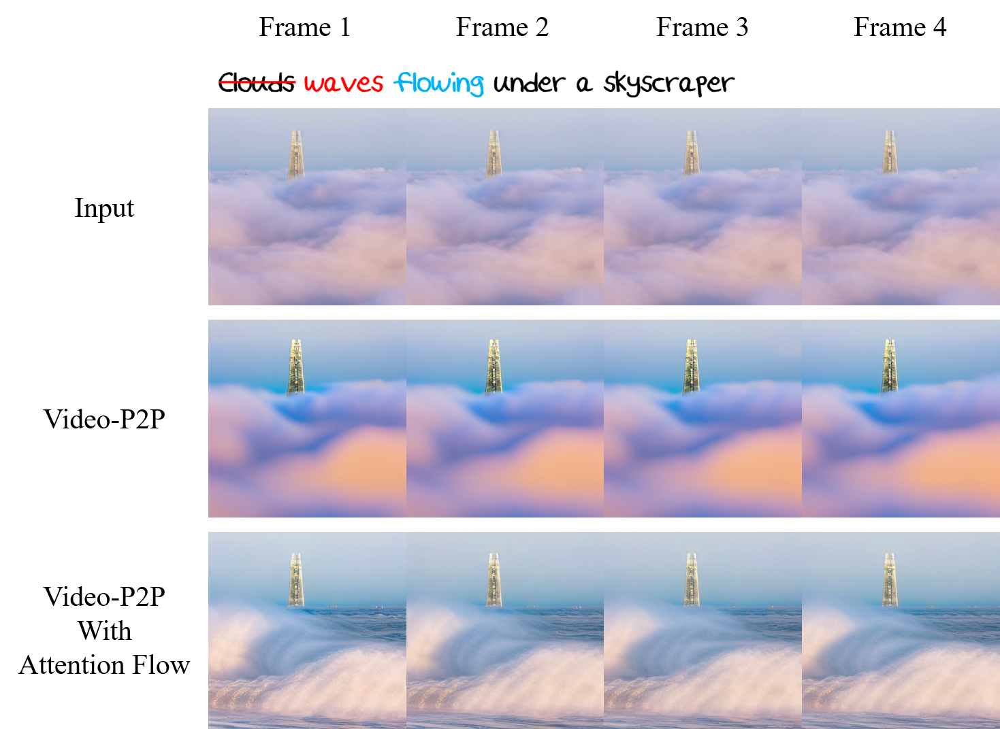
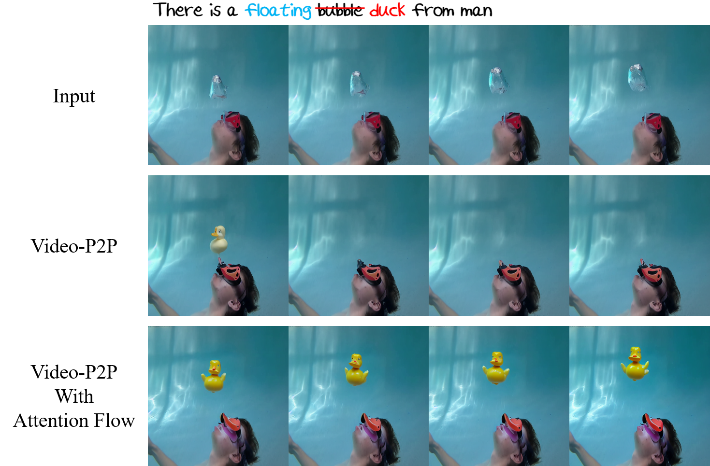
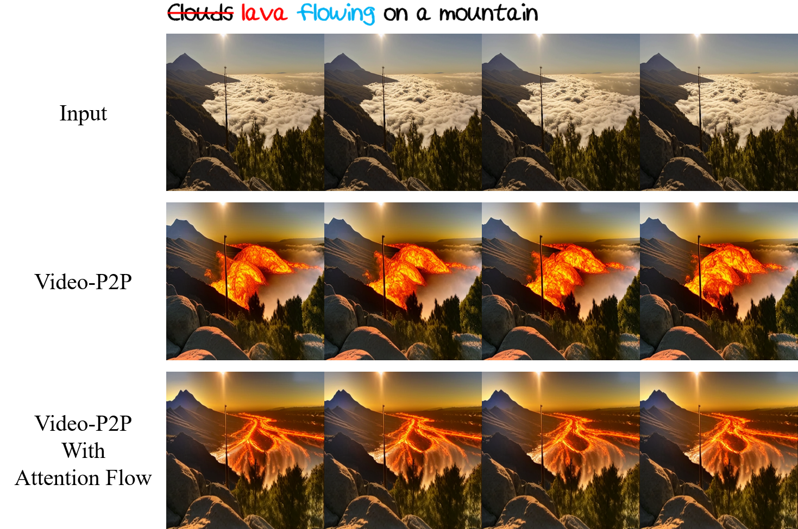
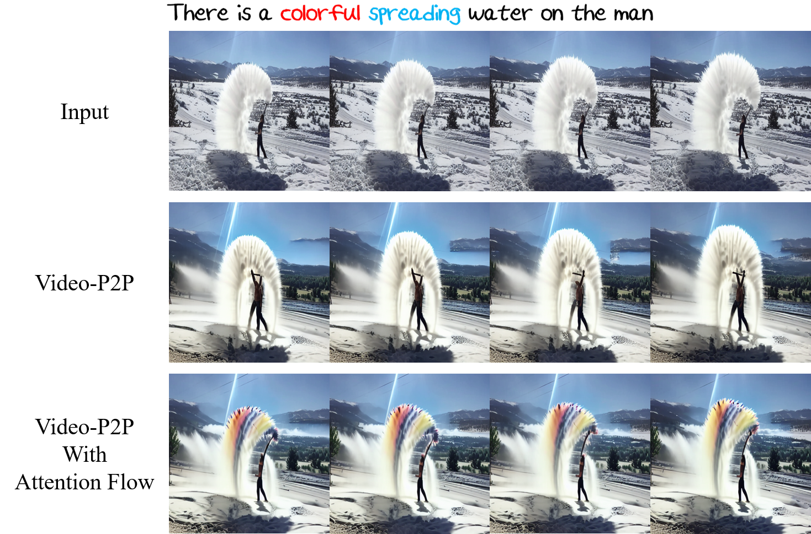
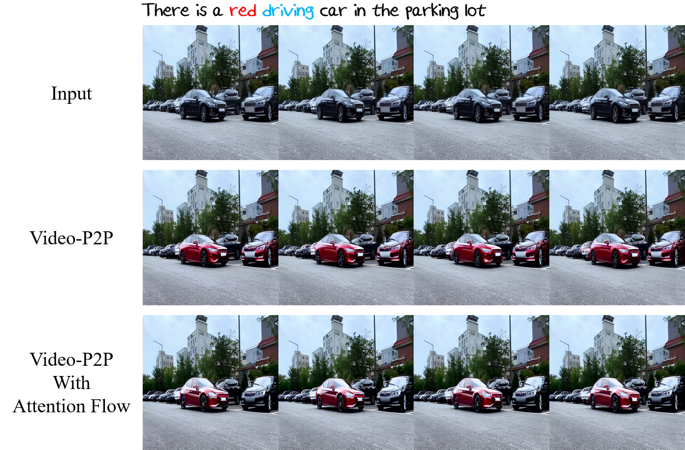
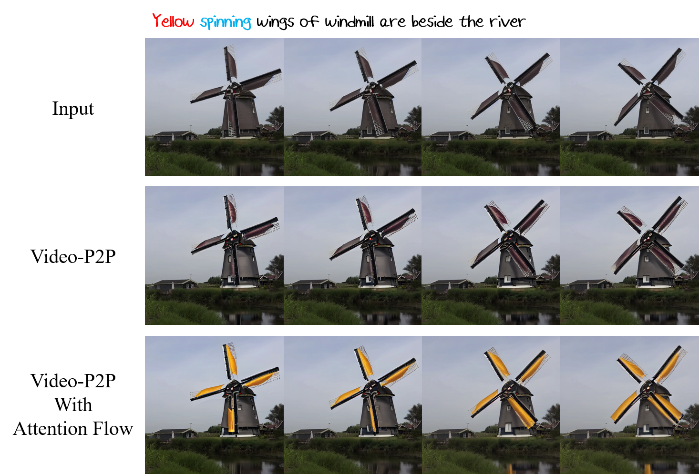
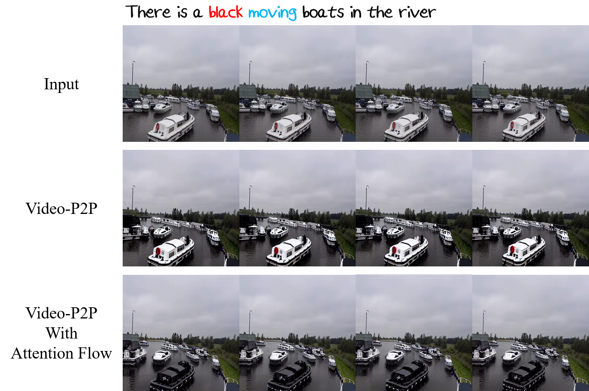
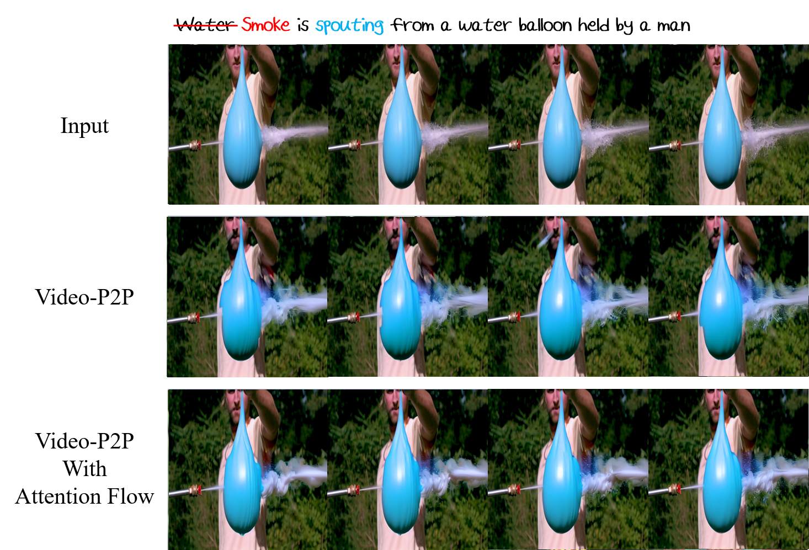
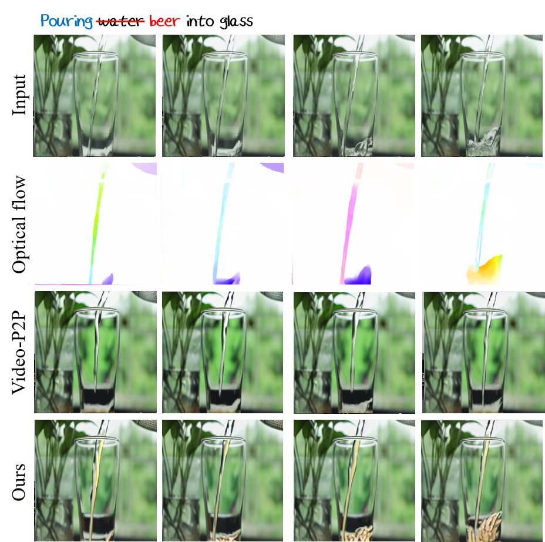
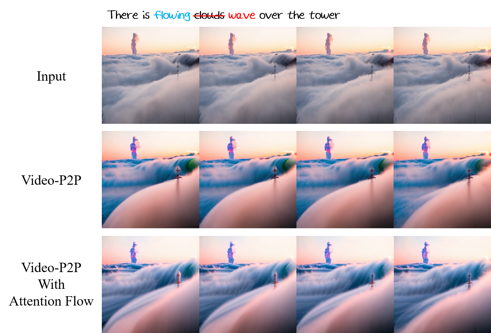
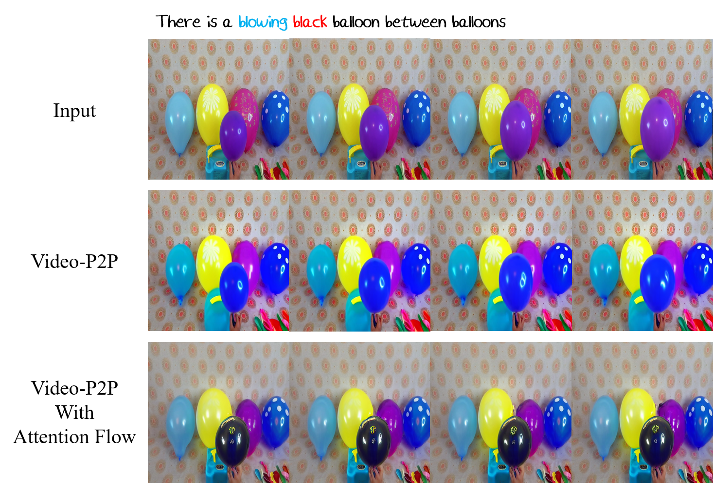
Application
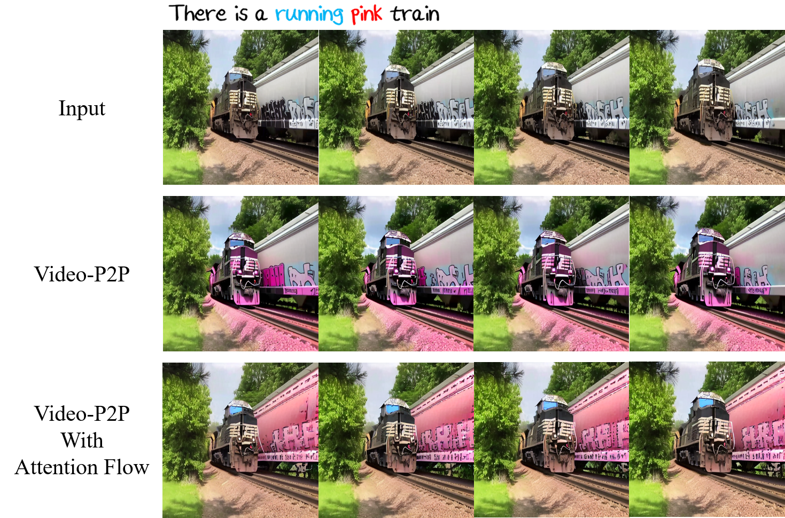
Since optical flow has the information on direction of pixel movement, as well as magnitude,
our model can be applied to allow the user to edit contents in a specific direction by rotating the optical flow
according to the direction provided by the user before injecting it.
Ablation Study
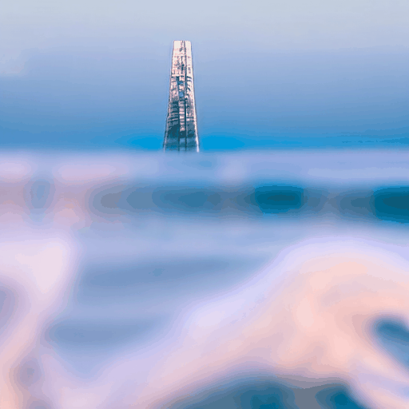
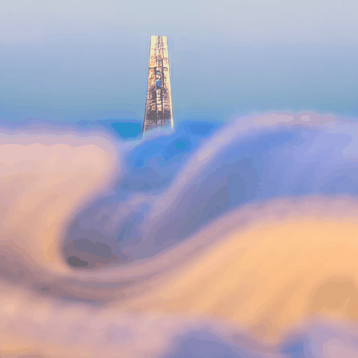
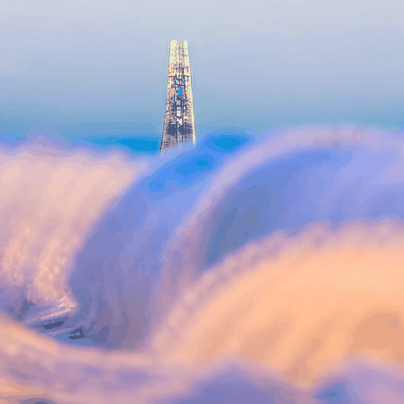
From the left, the result from applying cv2.TM_SQDIFF, cv2.TM_CCORR, and cv2.TM_CCOEFF as correlation calculating method.
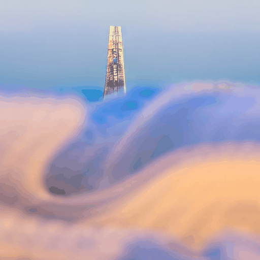
From the left, the result from applying cv2.TM_SQDIFF_NORMED cv2.TM_CCORR_NORMED cv2.TM_CCOEFF_NORMED as correlation calculating method.
Ablation study on which method for calculating correlation between attention maps and motion map makes video edited in best quality. We used cv2.TM_CCOEFF_NORMED to calculate the correlation for realistic video editing.